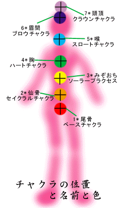
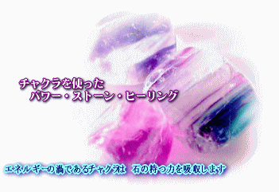

チャクラ & パワーストーン
 |
 チャクラとは 中枢神経に影響するエネルギーポイント。 チャクラの上に直接石を載せるか、手に持ってチャクラの上に重ねます。 石からチャクラ･カラーの光が溢れ、チャクラに吸収されていくところをイメージします。 チャクラから吸収された光がその部分から波のように広がり、やがて体中の細胞を光が満たしてゆくところをイメージし、そのリラクゼーションを感じます。 |
チャクラ |
色 |
キーワード |
適 用 |
対応する石 |
香 り |
| 第7 王冠のチャクラ (頭頂) |
紫 | 宇宙のエネルギーを受け取る | ここから宇宙的な意識、ホリスティックな意識が発生します。内なる師とつながり、高次の知恵を発揮します。ここにアプローチすることで成長と性成熟に影響を与える松果腺を活性化することが出来ます。ブロックされると頭痛や偏頭痛の原因となるエネルギー停電を招きます。 | クリスタル、アメジスト フローライト(クリア)、マグネタイト、ルチルクウォーツ |
ラベンダー、ネロリ フランキンセンス サンダルウッド |
| 第6 眉間のチャクラ (額） |
藍 | 潜在意識への働きかけ、直観力 | 心と思考に関するチャクラです。第3の目とも呼ばれ透視力、直観力を養う場所でもあります。目、耳、副鼻腔、小脳の機能を調整します。妨げられると頭でっかちな合理主義者になったり、真実を見極められなくなります。 | クリスタル、ラピスラズリ、 アクアマリン、 アパッチティアー フローライト(パープル) |
ローズマリー タイム ヘリクリサム |
| 第5 喉のチャクラ |
青 | コミュニケーション を制御 |
思考や感情を言葉にするのを助け、コミュニケーションや自己表現に役立てます。声帯、気管支、肺などを管理し、甲状腺を通じて、新陳代謝に関する役割をにない、感情表現にも影響します。ここが機能しないと、自分に自身が持てなかったり、社会性がなくなります。 | ブルーレース・カルセドニー、
ラピスラズリ、アクアマリン クリスタル、ターコイズ |
ユーカリ、 ヤロウ、ラバンサラ カモミール･ジャーマン |
| 第4 ハートチャクラ(胸の中心) |
緑 | 真の愛に目覚め、 出会う |
肉体のチャクラ（１〜３）と精神のチャクラ（5〜7）を結び付け、至高のエネルギー愛の感覚を養い現実に生かす働きをします。ここが機能しないと無感情やあきらめを招き、愛の欠如、孤独、嫉妬を招きます。 | ローズクウォーツ、 フローライト（グリーン） クリスタル、アメジスト |
ローズ、イランイラン ベルガモット ジャスミン |
| 第3 みぞおちのチャクラ |
黄 | 達成力を強化 | 自律神経系が操作され、肝臓、腎臓、胃などに影響を与えるチャクラです。バランスや達成能力を促し、消化機関に栄養をゆきわたらせます。ブロックされると代謝器官の機能低下、落胆、不快感、 | クリスタル、ムーンストーン タイガーアイ、マグネサイト イエロー・ジェイド |
オレンジ ジュニパー マンダリン |
| 第2 仙骨のチャクラ (丹田) |
橙 | 生きる喜びを 増大する |
このチャクラに関係しているのは副腎の分泌腺、膀胱、リンパ、生殖器です。ここから体の排泄機能もコントロールされるので浄化や、解毒プロセスも活性化されます。
さらに、官能性、忍耐力、創造性、成功や生きる喜びも促します。ここがブロックされると睡眠や消化、下腹部に障害が生じます。 |
クリスタル、ムーンストーン、 トルマリン、オブディシアン カルサイト（オレンジ） |
ジャスミン コリアンダー ヤロウ、マジョラム |
| 第1 ベースチャクラ（尾骨） |
赤 | 生命力の源 グラウンディング |
根のチャクラともいい、地に足のついた状態(グラウンディング)にします。血糖値、細胞形成を調整し、小腸、脊椎、生殖器をつかさどり、性的能力、繁殖能力の役割をになっています。ここがブロックされると、消耗、不満、腸の障害を引き起こします。 | クリスタル、ジャスパー、 ヘマタイト、トルマリン カーネリアン |
ベンゾイン パチュリー ローズウッド |
Source: http://village.infoweb.ne.jp/~aromatic/stone/chakura.html